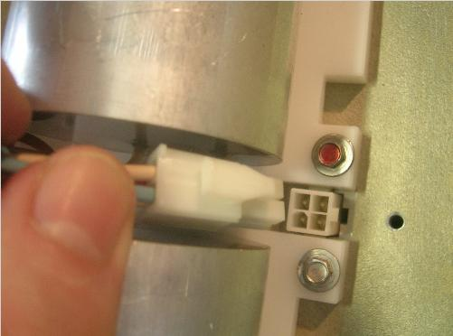

Operating Documentation
Direction 5181166-800, Rev# 7
BrightSpeed Select Service Methods Adv
Operating Documentation |
| Required Persons | Preliminary Reqs | Procedure | Finalization |
|---|---|---|---|
| 1 | Timing Not Applicable | 30 minutes |
Replace the phase shift capacitor set (Part no: 5175114). This capacitors set is attached on the auxiliary box
Remove straight cover of the auxiliary unit
Replace the Phase Shift Capacitors module
Replace cover
No general safety information.
| Condition | Reference | Eff |
|---|---|---|
Before beginning this procedure, please read the gantry safety information. | - | - |
| BEFORE ANY MANUAL INTERVENTION, ENSURE THE MAIN POWER IS OFF. APPLY PROPER LOCK OUT – TAG OUT PROCEDURE FOR YOUR OWN SAFETY WHEN MANIPULATING INSIDE THE EQUIPMENT IS REQUIRED. |
Move table to its lowest elevation.
Remove side, top and front gantry covers.
Turn OFF all 3 switches (Axial Drive, HVDC, 120VAC) on the Service Switch Panel.
Remove power at main disconnect panel. Use proper Lockout / Tagout procedures.
Rotate the Gantry until the Auxiliary Assembly reaches the 3 o’clock position.
Engage gantry rotational lock.
Remove straight cover of the auxiliary box.
Disconnect all the cables showed in below picture:
Illustration 1: Auxiliary Box Cable Connection

Remove four screws and put the PI board assembly at proper position.
Illustration 2: Remove screws

Remove ten (10) screws to remove the straight cover. Then the capacitors will appear.
Illustration 3: Remove the straight cover

Illustration 4: capacitors

Disconnect the following cable from the Auxiliary Casting
Illustration 5: Disconnect cable from the Auxiliary Casting

Unscrew the 8 screws around the plastic support, and remove the module from the Auxiliary Unit.
Ensure that Lockout / Tagout procedure has been applied, and that gantry power is removed.
Ensure that gantry rotational lock is engaged and gantry does not rotate by attempting to rotate gantry by hand.
Place the new phase shift capacitors module. Assemble the 8 Screws with respect of torques: 2Nm.
Connect the cable to the Auxiliary Casting.
Fasten the cables to the auxiliary box using ty-wraps.
Install the straight cover of auxiliary box.
Install the PI board assembly.
Connect all the cables which are disconnect in previous step.
Install all the gantry covers removed in previous steps.
Run System Scanning Test verify that the system is operational.